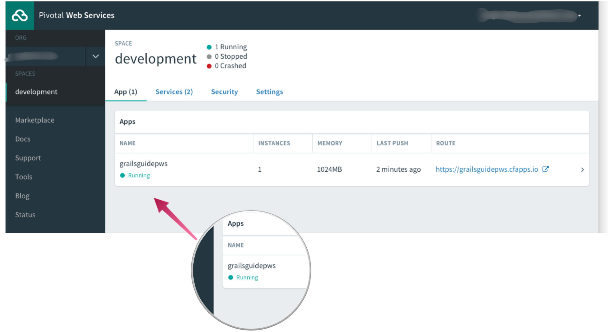

grails create-app grailsguidepwsDeploy a Grails 3 App to Pivotal Web Services (PWS)
Learn how to deploy a Grails 3 application on Pivotal Web Services (PWS), which is powered by the Cloud Foundry Platform as a Service (PaaS).
Authors: Sergio del Amo
Grails Version: 3.2.6
1 Getting Started
In this guide you are going to deploy a Grails 3 application to Pivotal Web Services (PWS). First we deploy the app with cf CLI. Later we deploy with a Gradle task.
1.1 What you will need
To complete this guide, you will need the following:
-
Some time on your hands
-
A decent text editor or IDE
-
JDK 1.7 or greater installed with
JAVA_HOMEconfigured appropriately
If you want to start from scratch, create a new Grails 3 app:
1.2 How to complete the guide
To complete this guide, you will need to checkout the source from Github and work through the steps presented by the guide.
To get started do the following:
-
Download and unzip the source or if you already have Git:
git clone https://github.com/grails-guides/grails-deploy-pws.git -
cdintograils-guides/grails-deploy-pws/initial -
Head on over to the next section
You can go right to the completed example if you cd into grails-guides/grails-deploy-pws/complete
|
2 Setup PWS Account and install cf CLI
Follow the instructions to set up your PWS account and download the cf CLI. You can create a free trial for your organization .
3 Deploy on PWS with cf CLI
Once you have the cf CLI installed you will be able to login from your terminal.
$ cf login
API endpoint: https://api.run.pivotal.io
Email> john@email.com
Password>
Authenticating...
OK
Select an org (or press enter to skip):
1. guides-grails-org
Org> 1
Targeted org guides-grails-org
Targeted space development
API endpoint: https://api.run.pivotal.io (API version: 2.69.0)
User: john@email.com
Org: guides-grails-org
Space: development3.1 Create a MySQL Service
You can see a list of every available service with the next command:
$ cf marketplaceLet’s create a MySQL database-as-a-service for our Grails application.
| cleardb is database-as-a-service for MySQL-powered apps |
$ cf create-service cleardb spark grailsguidesmysql
Creating service instance grailsguidesmysql in org guides-grails-org / space development as john@email.com...
OKIn production we are going to use the MySQL service which we just created.
Let’s create a production configuration file:
/grails-app/conf/application-production.groovy
def uri = new URI(System.env.DATABASE_URL)
dataSources {
dataSource {
driverClassName = "com.mysql.jdbc.Driver"
dialect = "org.hibernate.dialect.MySQL5InnoDBDialect"
username = uri.userInfo ? uri.userInfo.split(":")[0] : ""
password = uri.userInfo ? uri.userInfo.split(":")[1] : ""
url = "jdbc:mysql://" + uri.host + uri.path
properties {
jmxEnabled = true
initialSize = 5
maxActive = 50
minIdle = 5
maxIdle = 25
maxWait = 10000
maxAge = 600000
timeBetweenEvictionRunsMillis = 5000
minEvictableIdleTimeMillis = 60000
validationQuery = 'SELECT 1'
validationQueryTimeout = 3
validationInterval = 15000
testOnBorrow = true
testWhileIdle = true
testOnReturn = false
jdbcInterceptors = 'ConnectionState'
defaultTransactionIsolation = 2 //# TRANSACTION_READ_COMMITTED
}
}
}Remove from application.yml the environment production datasource block. We define production datasource configuration in application-production.groovy
That it is to say:
/grails-app/conf/application.yml
dataSource:
pooled: true
jmxExport: true
driverClassName: org.h2.Driver
username: sa
password:
environments:
development:
dataSource:
dbCreate: create-drop
url: jdbc:h2:mem:devDb;MVCC=TRUE;LOCK_TIMEOUT=10000;DB_CLOSE_ON_EXIT=FALSE
test:
dataSource:
dbCreate: update
url: jdbc:h2:mem:testDb;MVCC=TRUE;LOCK_TIMEOUT=10000;DB_CLOSE_ON_EXIT=FALSEAdd MySQL as a runtime dependency to Gradle dependencies block.
/build.gradle
runtime 'mysql:mysql-connector-java:5.1.40'3.2 Create CF Manifest file
We create a configuration file which we will use to push the application to PWS. The configuration file references the MySQL service which we created in the previous section.
/manifest.yml
---
applications:
- name: grailsguidepws
memory: 1G
instances: 1
path: build/libs/complete-0.1.war
buildpack: java_buildpack
services:
- grailsguidesmysql| You war name maybe different, make sure you configure the correct path. Also remember to use a different host name if you use the same one used in the guide you will get an error message telling you that the host name is already being used. |
3.3 Deploy the app
Generate a war file:
./grailsw war
Run cf push. If everything is successful you should see an output such as:
$ cf push
Using manifest file /Users/grails/git/grailsguidepws/manifest.yml
Creating app grailsguidepws in org guides-grails-org / space development as john@email.com...
OK
Creating route grailsguidepws.cfapps.io...
OK
Binding grailsguidepws.cfapps.io to grailsguidepws...
OK
Uploading grailsguidepws...
Uploading app files from: /var/folders/j3/_bh_nnt96g3737jvnfcvnwcc0000gn/T/unzipped-app735681719
Uploading 1.8M, 254 files
Done uploading
OK
Binding service grailsguidesmysql to app grailsguidepws in org guides-grails-org / space development as john@email.com...
OK
Starting app grailsguidepws in org guides-grails-org / space development as john@email.com...
Downloading java_buildpack...
Downloaded java_buildpack
Creating container
Successfully created container
Downloading app package...
Downloaded app package (62.1M)
Staging...
-----> Java Buildpack Version: v3.12 (offline) | https://github.com/cloudfoundry/java-buildpack.git#6f25b7e
-----> Downloading Open Jdk JRE 1.8.0_121 from https://java-buildpack.cloudfoundry.org/openjdk/trusty/x86_64/openjdk-1.8.0_121.tar.gz (found in cache)
Expanding Open Jdk JRE to .java-buildpack/open_jdk_jre (1.1s)
-----> Downloading Open JDK Like Memory Calculator 2.0.2_RELEASE from https://java-buildpack.cloudfoundry.org/memory-calculator/trusty/x86_64/memory-calculator-2.0.2_RELEASE.tar.gz (found in cache)
Memory Settings: -Xss349K -Xmx681574K -XX:MaxMetaspaceSize=104857K -Xms681574K -XX:MetaspaceSize=104857K
-----> Downloading Container Certificate Trust Store 1.0.0_RELEASE from https://java-buildpack.cloudfoundry.org/container-certificate-trust-store/container-certificate-trust-store-1.0.0_RELEASE.jar (found in cache)
Adding certificates to .java-buildpack/container_certificate_trust_store/truststore.jks (1.2s)
-----> Downloading Container Customizer 1.1.0_RELEASE from https://java-buildpack.cloudfoundry.org/container-customizer/container-customizer-1.1.0_RELEASE.jar (found in cache)
-----> Downloading Spring Auto Reconfiguration 1.10.0_RELEASE from https://java-buildpack.cloudfoundry.org/auto-reconfiguration/auto-reconfiguration-1.10.0_RELEASE.jar (found in cache)
Exit status 0
Uploading droplet, build artifacts cache...
Staging complete
Uploading build artifacts cache...
Uploading droplet...
Uploaded build artifacts cache (109B)
Uploaded droplet (107.3M)
Uploading complete
Destroying container
Successfully destroyed container
0 of 1 instances running, 1 starting
0 of 1 instances running, 1 starting
0 of 1 instances running, 1 starting
0 of 1 instances running, 1 starting
0 of 1 instances running, 1 starting
1 of 1 instances running
App started
OK
App grailsguidepws was started using this command `CALCULATED_MEMORY=$($PWD/.java-buildpack/open_jdk_jre/bin/java-buildpack-memory-calculator-2.0.2_RELEASE -memorySizes=metaspace:64m..,stack:228k.. -memoryWeights=heap:65,metaspace:10,native:15,stack:10 -memoryInitials=heap:100%,metaspace:100% -stackThreads=300 -totMemory=$MEMORY_LIMIT) && JAVA_OPTS="-Djava.io.tmpdir=$TMPDIR -XX:OnOutOfMemoryError=$PWD/.java-buildpack/open_jdk_jre/bin/killjava.sh $CALCULATED_MEMORY -Djavax.net.ssl.trustStore=$PWD/.java-buildpack/container_certificate_trust_store/truststore.jks -Djavax.net.ssl.trustStorePassword=java-buildpack-trust-store-password" && SERVER_PORT=$PORT eval exec $PWD/.java-buildpack/open_jdk_jre/bin/java $JAVA_OPTS -cp $PWD/. org.springframework.boot.loader.WarLauncher`
Showing health and status for app grailsguidepws in org guides-grails-org / space development as john@email.com...
OK
requested state: started
instances: 1/1
usage: 1G x 1 instances
urls: grailsguidepws.cfapps.io
last uploaded: Fri Feb 3 09:35:52 UTC 2017
stack: cflinuxfs2
buildpack: java_buildpack
state since cpu memory disk details
#0 running 2017-02-03 10:37:26 AM 260.5% 485.8M of 1G 194.7M of 1G
You can check your app status in the PWS console:

4 Deploy on PWS with Gradle
It is possible to integrate your PWS deployment with Gradle
Create a gradle.properties file outside your project with your cf credentials:
$ cat ~/.gradle/gradle.properties
cfUsername=john@email.com
cfPassword=secretAdd the Gradle CloudFoundry plugin
/build.gradle
buildscript {
repositories {
mavenCentral()
}
dependencies {
classpath 'org.cloudfoundry:cf-gradle-plugin:1.1.2'
}
}
apply plugin: 'cloudfoundry'Configure your app services:
/build.gradle
cloudfoundry {
target = "https://api.run.pivotal.io"
organization = "guides-grails-org"
application = "grailsguidepws"
space = "development"
file = file("build/libs/complete-0.1.war")
memory = 1024
instances = 1
buildpack = "java_buildpack"
services {
"mysql" {
label = "grailsguidesmysql"
plan = "spark"
bind = true
}
}
}Generate a war file:
./grailsw war
Deploy with gradle
./gradlew cfPush
5 Do you need help with Grails?
OCI sponsored the creation of this Guide. OCI offers several Grails services:

OCI Grails Team includes Grails co-founder and the core development team. Gain access to the engineers who developed, matured and maintain Grails